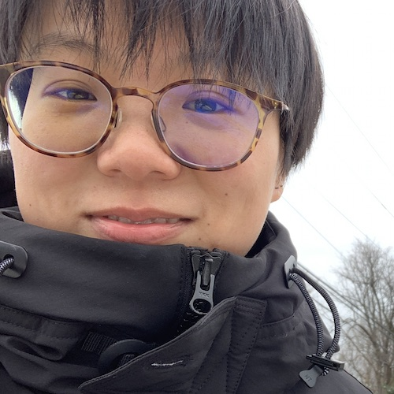

Fairfax,VA.
I am a Ph.D. student in Creativity and Graphics Lab (CraGL) at George Mason University. I am broadly interested in computer graphics, geometric modeling, 2D/3D drawing interfaces.
Before starting my journey of Ph.D, I have worked in Apple and IBM.
Programming, speak Chinese(Mandarin) and English
yu_xue@me.com